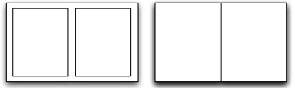

Opciones de folleto
- Seleccione una opción de Acabado de folleto.
- Para ajustar a escala el formato a un tamaño de papel nuevo, junto a Escala a nuevo tamaño de papel, haga clic en las flechas y, a continuación, seleccione el tamaño deseado. Para crear un tamaño personalizado, seleccione Personalizado.
- Para configurar los tamaños de los márgenes, en Márgenes de folleto, haga clic en las flechas y, a continuación, seleccione una opción.
- Estándar: Esta opción reduce el tamaño de la imagen de página para imprimir el documento en un tamaño de papel estándar como un folleto sin pérdida de imagen.
- Ninguno: Esta opción imprime el documento como folleto sin reducción del tamaño de las imágenes de página. Esta opción puede cortar la imagen si la impresora no puede imprimir hasta el borde del papel.

- Especifique el desplazamiento y margen interior según sea preciso.
- Margen interior: Especifica la anchura del margen central, en puntos, entre las imágenes de las páginas. Escriba un valor o utilice las flechas para seleccionar el número de puntos. Un punto equivale a 0.35 mm o 1/72 de pulgadas.
- Desplazamiento: Especifica la distancia que deben desplazarse las imágenes de la página hacia el exterior, en incrementos de décimas de punto. Para especificar el desplazamiento de las imágenes de la página, escriba un valor o utilice las flechas para seleccionar un valor.
- Haga clic en Aceptar.